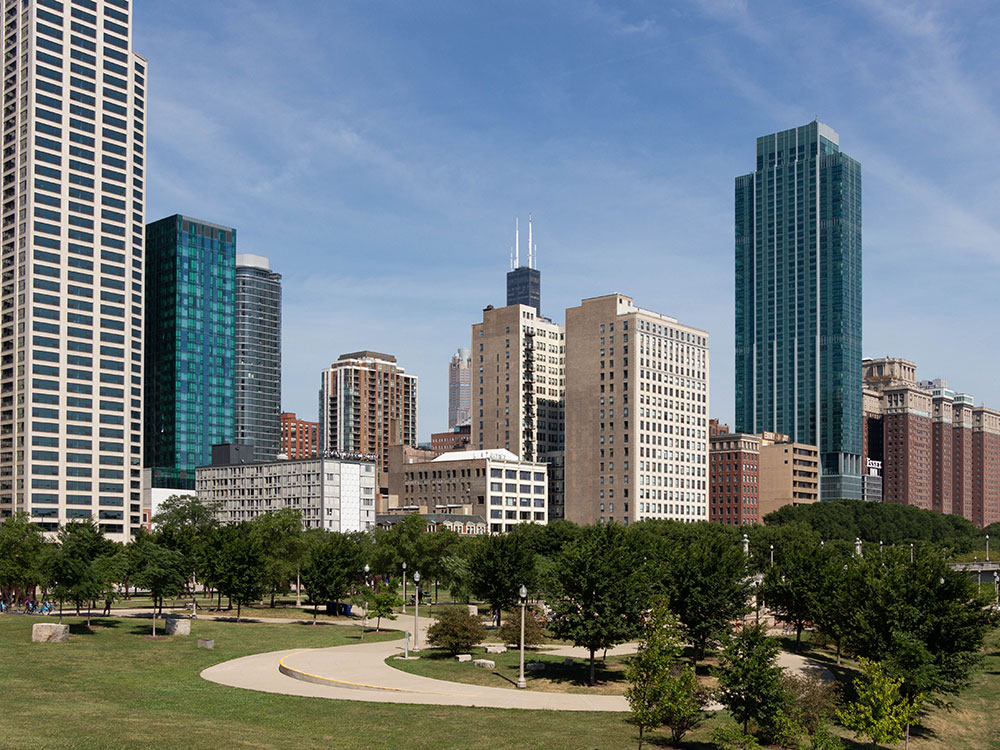
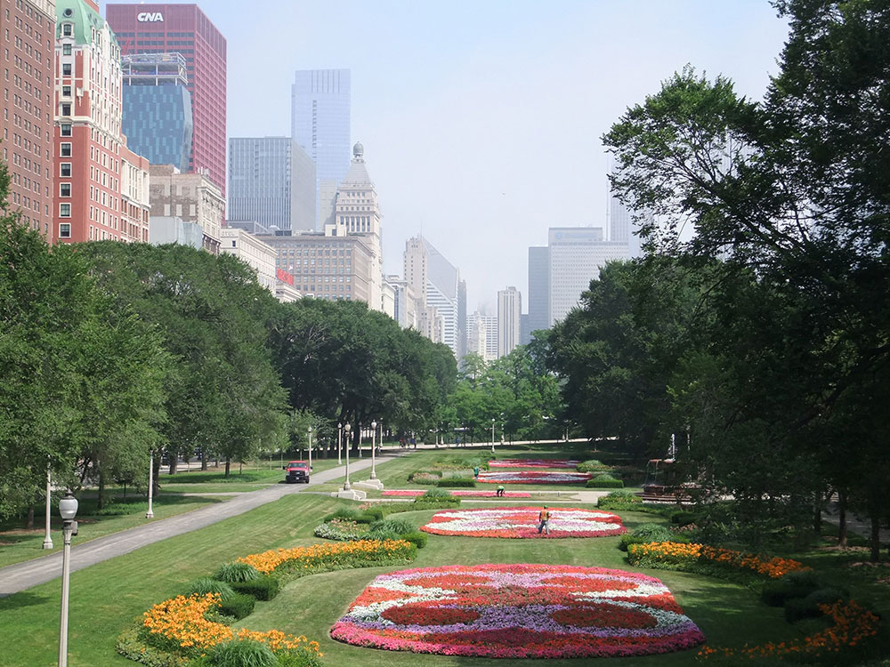
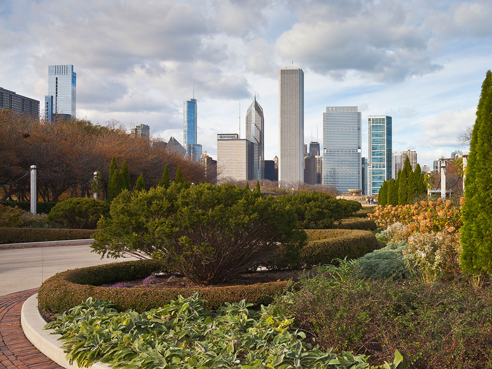
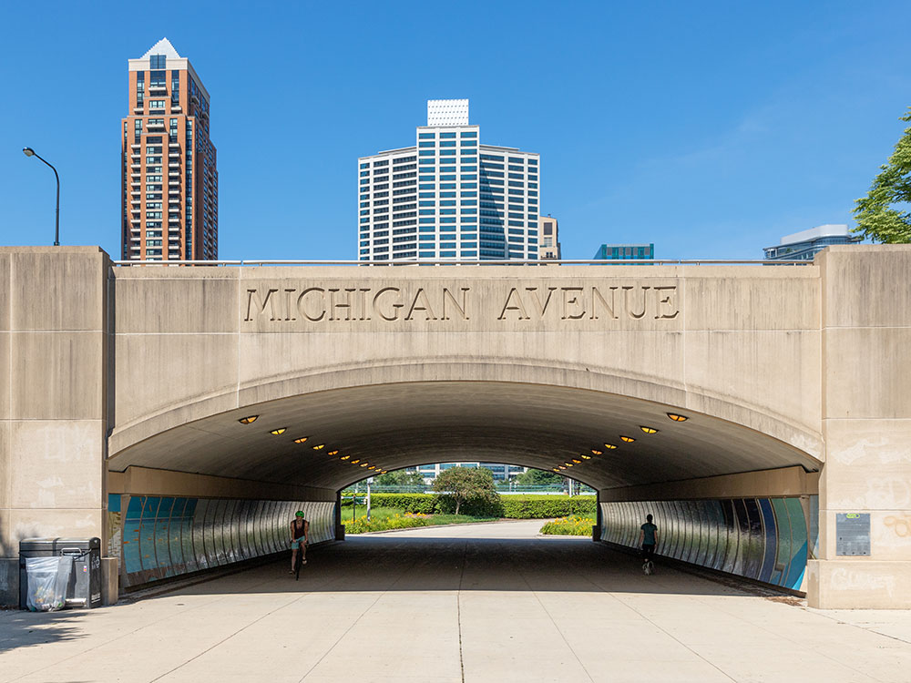
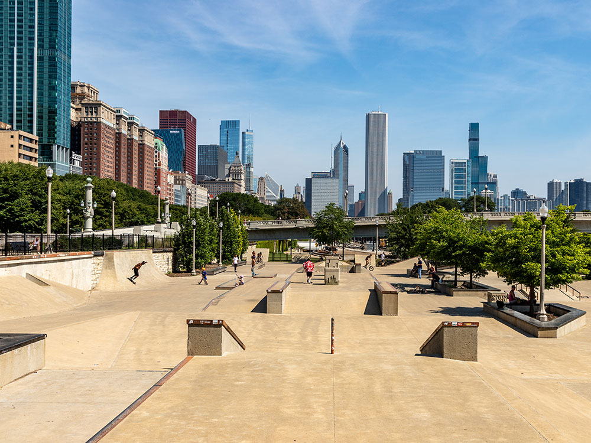
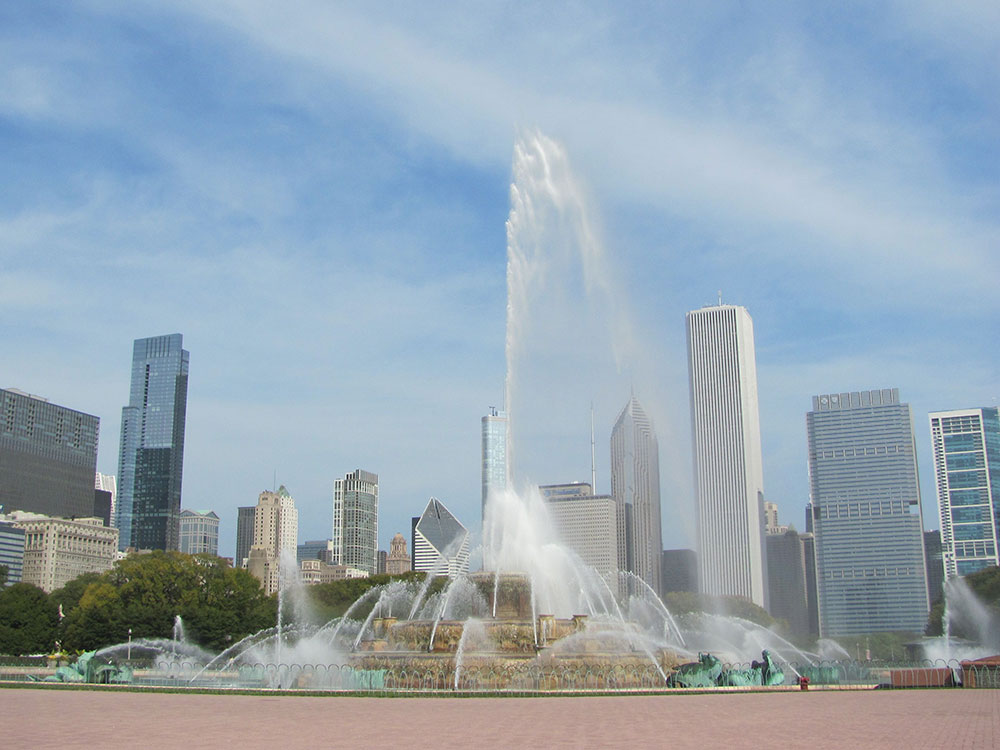

Large urban park located within the city's central business district, featuring Millennium Park, Buckingham Fountain, the Art Institute of Chicago, and the Museum Campus
General Information
How to Get There
From Downtown Chicago (1 mi): Head east toward Michigan Avenue between Randolph Street and Roosevelt Road to enter the park, home to Buckingham Fountain, the Art Institute of Chicago, and the Museum Campus.
Overview
Grant Park is a large urban park (319 acres or 1.29 km²) in the Loop community area of Chicago, Illinois. Located within the city's central business district, the park's features include Millennium Park, Buckingham Fountain, the Art Institute of Chicago, and the Museum Campus. Originally known as Lake Park, and dating from the city's founding, it was renamed in 1901 to honor US President Ulysses S. Grant. It is bordered on the north by Randolph Street, on the south by Roosevelt Road and McFetridge Drive, on the west by Michigan Avenue and on the east by Lake Michigan. The park contains performance venues, gardens, art work, sporting, and harbor facilities. It hosts public gatherings and several large annual events.
Grant Park is popularly referred to as "Chicago's front yard". It is governed by the Chicago Park District.
The center piece of Grant Park is Buckingham Fountain, one of the world's largest fountains. In a rococo wedding cake style, the fountain was dedicated in 1927 as a gift to the city from Kate Sturges Buckingham in memory of her brother Clarence. The fountain operates from April to October with water displays every 20 minutes and a light and water display from 8:00 am to 11:00 pm.
The northwestern corner of the park was renovated from 1998 to 2004 to become Millennium Park, a contiguous area with a variety of artistic features by architects and artists. Millennium Park features the Jay Pritzker Pavilion, the Cloud Gate (aka The Bean), the Crown Fountain, the Lurie Garden, and other attractions. The park is connected by the BP Pedestrian Bridge and the Nichols Bridgeway to other portions of Grant Park.
Across the BP Pedestrian Bridge from Millennium Park, the northeast corner of Grant Park hosts outdoor and indoor activities at what is now Maggie Daley Park, previously called Daley Bicentennial Plaza. Designed by landscape architect Michael Van Valkenburgh, attractions here include summer and winter skating rinks, an extensive playground, climbing walls, tennis courts, and an activities building, which were redeveloped from 2012 to 2015.
Built in 1893 on the western edge of Grant Park, the Art Institute of Chicago is one of the premier art museums and art schools in the US, known especially for the extensive collection of Impressionist and American art, such as A Sunday Afternoon on the Island of La Grande Jatte, and Grant Wood's American Gothic. The School of the Art Institute of Chicago has facilities in the southeast corner of the museum's complex.
Chicago's Museum Campus is a 57-acre (23 ha) addition to Grant Park's southeastern end. The Museum Campus is the site of three of the city's most notable museums, all dedicated to the natural sciences: Adler Planetarium, Field Museum of Natural History, and Shedd Aquarium. A narrow isthmus along Solidarity Drive dominated by neoclassical sculptures of Kościuszko, Havliček and Nicolaus Copernicus connects to Northerly Island where the planetarium is located to the east of the Museum Campus situated on the mainland.
Located at Jackson and Columbus Drives, the Petrillo Music Shell hosts music performances during the Chicago Jazz Festival, Chicago Blues Festival, Taste of Chicago, and Lollapalooza. The music shell's seating area includes an area called Butler Field, the block bounded by Lake Shore Drive, Columbus Drive, Monroe Drive, and Jackson Drive. The previous Petrillo Bandshell structure faced Hutchinson Field at the south end of the park.
Congress Plaza is a ceremonial entrance located on the park's western edge, at the Ida B. Wells Drive and Michigan Avenue intersection. Two semicircular plazas flanking Ida B. Wells Drive contain gardens, fountains, and artwork, including a pair of large bronze warrior statues, The Bowman and The Spearman that are positioned like gatekeepers to the park.
There are several gardens and flower displays throughout the park. Millennium Park houses the Lurie Garden, known for its display of tall grass flowers, particularly lavender, and a decorative post-modern water stream. To the east, across the BP Pedestrian Bridge, Daley Park holds tall grass plantings. To the northeast in Daley Park, is the Richard & Annette Bloch Cancer Survivors Garden, marked by two huge doric columns from the demolished Chicago Federal Building and a wrought-iron pergola. The garden contains numerous walkways lined with planters and is one of several similar spaces created nationwide by R. A. Bloch Cancer Foundation.
Flanking the original Art Institute of Chicago Building are gardens in the north and south McCormick Courtyards; in the south courtyard is the bronze sculpture Fountain of the Great Lakes. To the south of the art museum, along Michigan Avenue, are a succession of gardens. Two of these are not far from to Orchestra Hall and honor former conductors of the Chicago Symphony Orchestra (Sir Georg Solti and Theodore Thomas).
To the southeast of the Art Institute, near the Court of Presidents, are demonstration gardens that flank Ida B. Wells Drive and surrounding Buckingham Fountain are a series of formal gardens, including the Tiffany Celebration Garden to the south.
The Court of the Presidents is located directly on the north and south side of E. Ida B. Wells Drive, west of S. Columbus Drive and east of S. Michigan Ave. Manicured gardens and art work help define the Court of Presidents. South President's Court, until recently, has primarily been gardens. However, within the past decade the city has decided to use the area to showcase art work by Chicagoans. While unique artwork has long been a tradition of Chicago's parks, South President's Court had the added benefit of showcasing "in house" art as its first newsworthy collection, entitled "Artist and Automobiles." The collection, organized by the Public Art Program and the Chicago Department of Cultural Affairs, consisted of sculptures composed entirely of parts found on old automobiles.
Much of the southern end of Grant Park is given over to Hutchinson Field, an open space for large events, with a dozen baseball or softball diamonds named for financier and long-time Art Institute President, Charles L. Hutchinson.
A section of the Chicago Lakefront Trail, an 18-mile multi-use path along the city's Lake Michigan shoreline, runs through the park's eastern edge. The trail runs adjacent to Lake Shore Drive from Randolph Drive to Balbo Drive, then along the very edge of the seawall around the Shedd Aquarium. An underpass carries the trail under Solidarity Drive into Burnham Park.
Two Lake Michigan marinas are accessed from Grant Park. It is home to both the Chicago Yacht Club and the Columbia Yacht Club. Queen's Landing, at the center of the harbor and park's shoreline, is named for a 1959 visit there by Queen Elizabeth II aboard the Royal Yacht Britannia, in conjunction with the opening of the St. Lawrence Seaway. Du Sable Harbor, created in 1999 north of Randolph Drive, offers 420 boat docks and a harbor store.
The Grant Park Skate Plaza, designed by Chicago Landscape Architects Altamanu, was opened on December 6, 2014. The Plaza was initiated by Grant Park Conservancy President, Robert O’Neill. The new park occupies 3 acres (12,000 m2) and has replaced the former skate area near the tennis courts. The Conservancy sought planning support from local skateboarders and BMX bikers who formed the Grant Park Conservancy & Advisory Council Skate Committee. The Plaza is located in the southwest corner of the park near the former site of the 1893 Central Station and includes limestone pieces from the former railroad terminal.
The park holds a great deal of public art, much of it sculpture, in many areas including in Millennium Park, near Buckingham Fountain, the several gardens, and Congress Plaza.
Abraham Lincoln: The Head of State is a statue by sculptor Augustus Saint-Gaudens set in a 150-foot wide exedra by architect Stanford White, honoring the Illinois resident and 16th President of the United States. The statue was cast in 1908 and was displayed at the Metropolitan Museum of Art and at the 1915 San Francisco World's Fair, prior to being installed in the park in 1926. It is located in the Court of Presidents, north of Ida B. Wells Drive and west of Columbus Drive and is frequently called Seated Lincoln to avoid confusion with Saint-Gaudens' 1887 sculpture Abraham Lincoln: The Man in Lincoln Park.
Agora (from Greek, for urban meeting place) is an installation of 106 headless, armless sculptures designed by the Polish artist Magdalena Abakanowicz in southwestern Grant Park near Roosevelt Road. The piece was brought to the park in 2006.[38] The figures are 9 ft (2.7 m) tall and weigh approximately 1,800 lb (820 kg). Each is made from a hollow, seamless piece of weathering or COR-TEN® steel, giving the pieces a reddish appearance and rough bark-like texture. The figures appear to be milling about in a crowd; some face each other, while others look away.
At Michigan Avenue and Ninth Street is the General John Logan Memorial, a large equestrian statue of John A. Logan, dedicated in 1897. Logan was a United States major general, who had resigned his congressional seat to serve in the U.S. Army during the Civil War. He led troops in many battles throughout the West and South. After the war, he was elected to the U.S. Senate from Illinois. The monument mound, with a statue by Augustus Saint-Gaudens and Alexander Phimister Proctor, was initially intended as a burial site for Logan, but his family declined to relocate the general's grave.
This article uses material from the Wikipedia article "Grant Park (Chicago)", which is released under the Creative Commons Attribution-Share-Alike License 3.0










